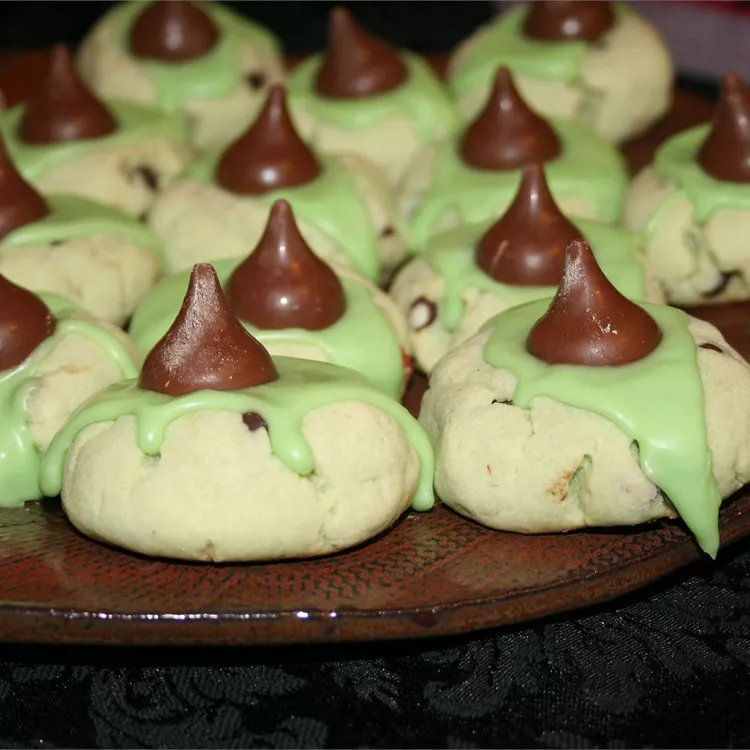

Booger Cookies

Description
These whimsically named "Booger Cookies" are a delightful treat that
combines the creamy texture of pistachio pudding with the richness of
chocolate. The cookies feature a soft, green-tinted base made with
margarine, sugar, and pistachio pudding mix, studded with chocolate chips
and topped with a gooey green frosting. Each cookie is finished with a
chocolate kiss, making them as fun to look at as they are to eat. Perfect
for Halloween parties or any occasion where you want to add a touch of
playful grossness to your dessert table!
Ingredients
- 1 cup butter, softened
- 1/3 cup confectioners' sugar
- 1 egg
- 1 teaspoon vanilla extract
- 3/4 teaspoon almond extract
- 1 (3 ounce) package instant pistachio pudding mix
- 2 cups all-purpose flour
- 1/2 cup semisweet chocolate chips
- 1 1/2 cups confectioners' sugar (for frosting)
- 1 teaspoon vanilla extract (for frosting)
- 1 tablespoon milk, or as needed (for frosting)
- 3 drops green food coloring, or as needed
-
24 milk chocolate candy kisses (such as Hershey's Kisses®), unwrapped
Steps
-
Preheat the oven to 350 degrees F (175 degrees C). Lightly grease a
baking sheet.
-
Beat margarine and 1/3 cup confectioners' sugar with an electric mixer
in a large bowl until smooth.
-
Beat in the egg, 1 teaspoon vanilla extract, and almond extract until
fully incorporated.
- Mix in the pudding mix until smooth.
-
Stir in the flour until just combined, then fold in the chocolate chips,
mixing enough to combine evenly.
-
Form the cookie dough into 1-inch balls and place them on the prepared
baking sheet.
- Use your thumb to make an indent in each cookie.
-
Bake in the preheated oven until the edges are golden, 10 to 14 minutes.
-
Allow the cookies to cool on the baking sheet for 1 minute before
transferring them to a wire rack to cool completely.
-
While the cookies are cooling, prepare the filling by stirring 1 1/2
cups confectioners' sugar with 1 teaspoon vanilla extract, milk, and
food coloring in a bowl. Add extra milk as needed to make the mixture
smooth.
-
Spoon a little of the green filling into each cooled cookie and top with
a candy kiss.